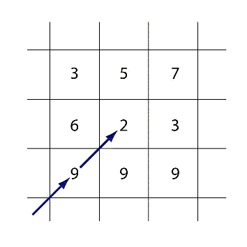
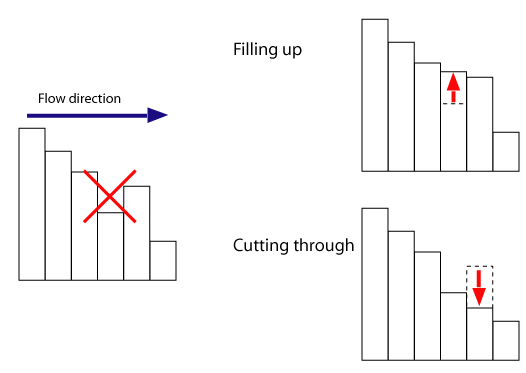

Vertiefungsbeispiele: Probleme und alternative Methoden bei der Ableitung von Abflussnetzwerken
Es gibt zwei Dinge, die man bei der Erstellung eines LDD-Netzes berücksichtigen muss. Der Informationsgehalt des Ergebnisses hängt oft von einer sinnvollen Wahl von Datenverarbeitungs- und Vorverarbeitungsmethoden ab. Einige werden nachfolgend beschrieben. Um eine sinnvolle Wahl der Verfahren zu treffen müssen die Analyseverfahren und die Metadaten des DGMs sorgfältig betrachtet werden.
Stochastische Methoden
Daten aus DGMs, wie die aus dem obigen
Beispiel, enthalten viele Ungewissheiten. Die definierte Struktur eines
Rasterdatensatzes berücksichtigt keine spezifischen geomorphologischen
Strukturen, wie z.B. Höhenrücken oder Schluchten. Es kann auch Messfehler geben,
oder Veränderungen in der Geländeoberfläche, die noch nicht aktualisiert wurden,
sowie Fehler, die aus vorherigen Arbeitsschritten stammen. Wegen diesen
Unsicherheiten im DGM werden häufig stochastische Methoden für die Erzeugung
realistischerer Abflussnetze verwendet. So ist beispielsweise der Rho8-Algorithmus dem D8-Algorithmus sehr ähnlich, verwendet aber, statt der
Quadratwurzel von 2, 2-r, wobei r eine gleichverteilte, zufällige Zahl
zwischen 0 und 1 ist. Diese Betrachtung wird eingeführt um die diagonale
Entfernung zwischen zwei nebeneinander liegenden Punkten zu schätzen. Daraus
resultieren unterschiedliche, möglicherweise realistischere oder für spezifische
Fragestellungen geeignetere LDD-Netze.
Eine Alternative
dazu ist eine Monte-Carlo-Simulation durchzuführen, indem die Höhenwerte des
DGMs mehrfach randomisiert werden und das LDD-Netz daraus extrahiert wird. Das
Netz, das am häufigsten vorkommt, wird als die wahrscheinlichste Lösung
angenommen. Für weitergehende Informationen sei auf (Burrough et al. 1998) verwiesen.
Algorithmen mit mehreren Fließrichtungen
Man kann auch annehmen, dass Wasser nicht nur in ein sondern in mehrere benachbarte Pixel fließt. Die FD8- und DRho8-Algorithmen umgehen dieses Problem, indem Abfluss in mehreren Richtungen gleichzeitig stattfinden kann. (Moore 1996) empfiehlt, einen sogenannten Abflussdispersion-Algorithmus statt des traditionellen D8-Algorithmus zu verwenden um bestimmte Einzugsgebiete einzuschätzen (vgl. auch (Wood 2005)).
Entfernung von abflußlosen Senken (Pits)
DGMs können abflusslose Senken aufweisen. Senken stellen in seltenen Fällen eine echte geomorphologische Form dar (Glazialkar, Karst), aber viel öfter sind sie DGM-Artefakte, die in Raster-DGMs ausgeglichen werden müssen. Senken kommen oft in schmalen Tälern vor, in denen die Breite der Talsohle kleiner ist als die Pixelauflösung. Eine Senke ist ein einziges Pixel mit einer niedrigeren Höhe als alle umliegenden Pixel, in der untenstehenden Abbildung z.B. das Mittelpixel mit Höhe=2. Infolge ist die Abflusstopologie gestört.

Die Zahlen in der obigen Abbildung geben die Höhe jedes Rasterpixels wider. Der Mittelpixel ist eine Grube, weil Wasser in keine Richtung abfließen kann.(Burrough et al. 1998) schlagen zwei Möglichkeiten vor um Senken zu entfernen (nächste Abbildung):
- Durchschneiden: Das Suchfenster um das Senkenpixel wird schrittweise vergrößert, bis ein Pixel oder einige Pixel gefunden werden, die dieselbe oder eine niedrigere Höhe als die der Grube haben.
- Auffüllen: Die Höhe des Senkenpixels wird erhöht, bis das Wasser in einen Nachbarpixel abfließen kann.

Auffüllen oder Durchschneiden als Strategien um ein zusammenhängendes Abflussnetz zu erzeugen.Nicht in jedem Fall muss das DGM auch tatsächlich physikalisch korrigiert werden. Für das Konzept von Oberflächenabfluss ist die wichtigste Determinante, dass das Abflussnetz zusammenhängend ist. Um dies zu erreichen könnte man, statt die Senke aufzufüllen oder zu durchschneiden, die Grube mit einem benachbarten Pixel topologisch verbinden ohne die zugrundeliegenden Höhenwerte zu ändern.
Flache Stellen
Nicht nur Senken, sondern auch flache Stellen können in DGMs Probleme verursachen, weil auch hier die Abflussrichtung unbestimmt ist. Flache Stellen können wie Senken behandelt werden, indem z.B. der nächste Punkt mit einem niedrigeren Höhenwert als Abflusspixel angenommen wird. Analog dazu können sie auch Seen sein, sodass Wasser von jedem Punkt auf der flachen Ebene in die gesamte Fläche abfließt.
Bearbeiten Sie...
Unten finden Sie ein sehr kleines Raster-DGM mit Höhenwerten für jeden Pixel
- Es gibt eine Senke. Finden Sie diese und füllen Sie sie auf, indem Sie darauf klicken.
- Aus welchem Pixel mündet das Wasser in den See? Klicken Sie auf den entsprechenden Pixel im See.